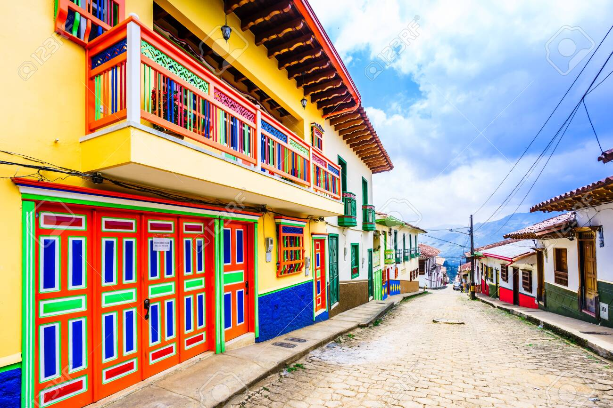
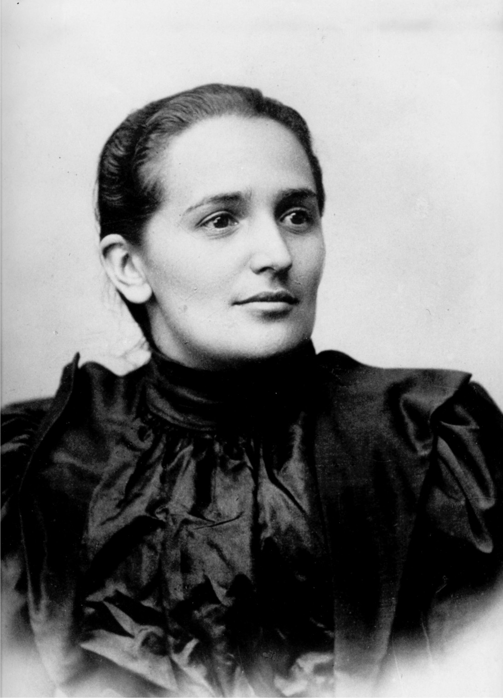
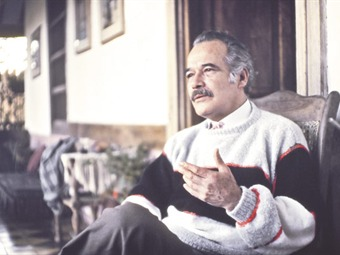
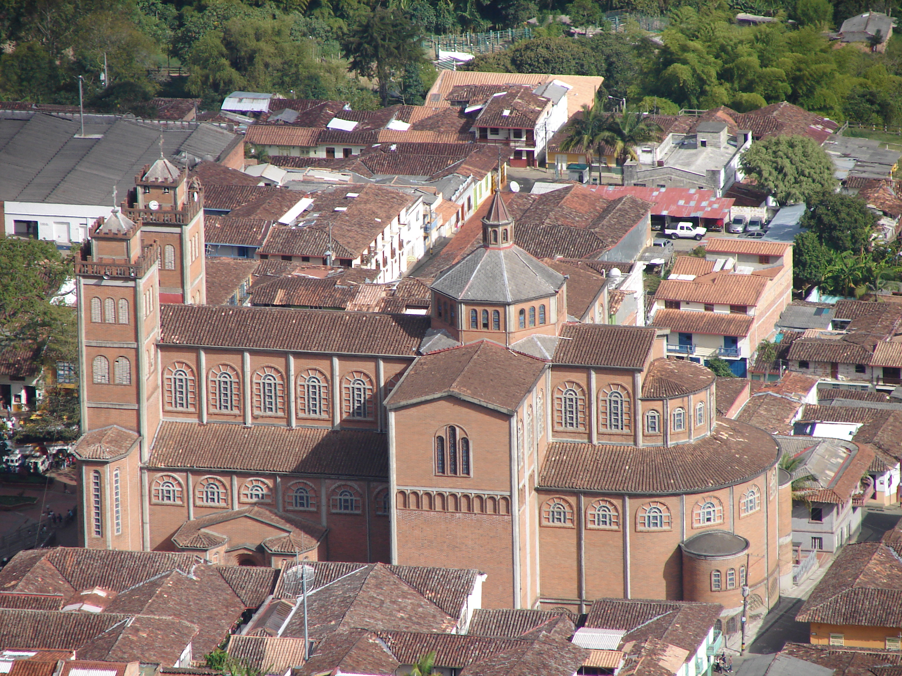
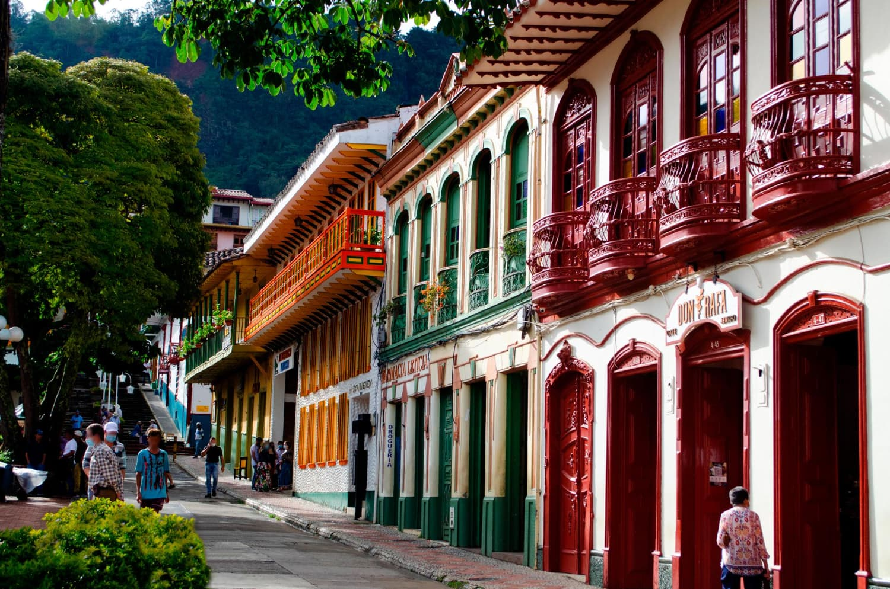
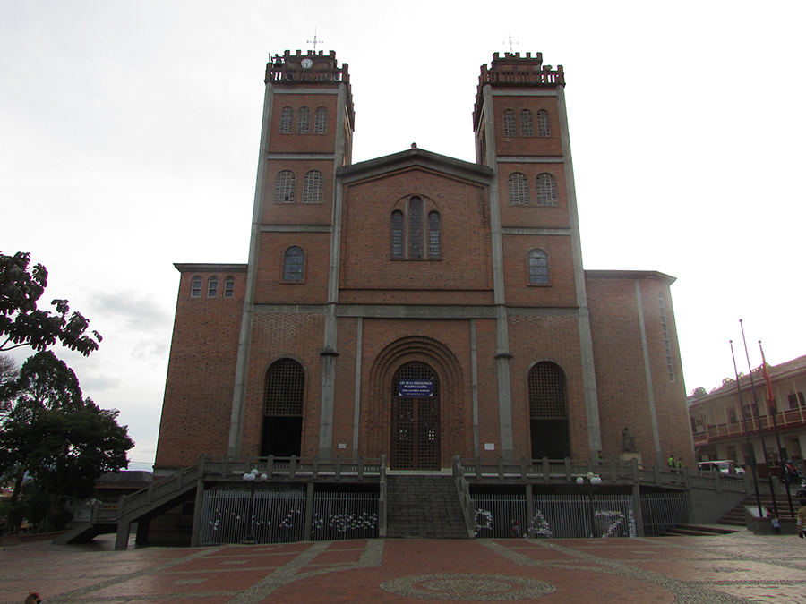

Historia de Jericó
Historia de Jericó
Fundado en 1851, Jericó es considerado uno de los pueblos más bellos de Colombia y patrimonio cultural de Antioquia. Conocido como la cuna de la Santa Laura Montoya, primera santa colombiana, su historia está marcada por la colonización antioqueña y el auge cafetero. Sus calles empedradas, casas coloridas y balcones floridos evocan el espíritu del siglo XIX.

 Personajes Históricos
Personajes Históricos
- Santa Laura Montoya: Primera santa colombiana, fundadora de la Congregación de las Misioneras de María Inmaculada y Santa Catalina de Siena.

- Manuel Mejía Vallejo: Reconocido escritor y novelista antioqueño con gran apego a Jericó.

 Hechos Importantes
Hechos Importantes
Jericó fue uno de los principales centros de producción de café en Antioquia durante el siglo XX, lo que impulsó su economía y desarrollo urbano. En 2013, fue incluido en la Red de Pueblos Patrimonio de Colombia.

 Turismo y Lugares Emblemáticos
Turismo y Lugares Emblemáticos
- Catedral de Nuestra Señora de las Mercedes
- Museo de Arte Religioso
- Mirador Cristo Rey
- Parque Natural Las Nubes

 Gastronomía
Gastronomía
En Jericó se disfrutan platos típicos antioqueños como la bandeja paisa, el sancocho, arepas de maíz pelao y postres como el arequipe artesanal y las brevas con arequipe.

 Galería
Galería

